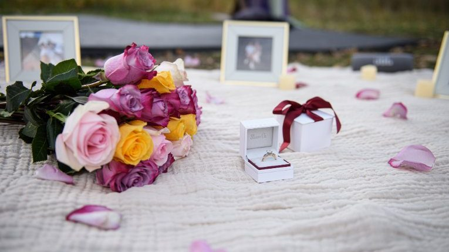
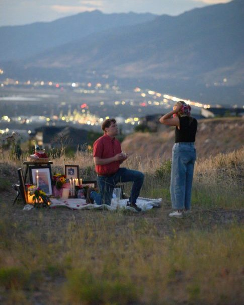
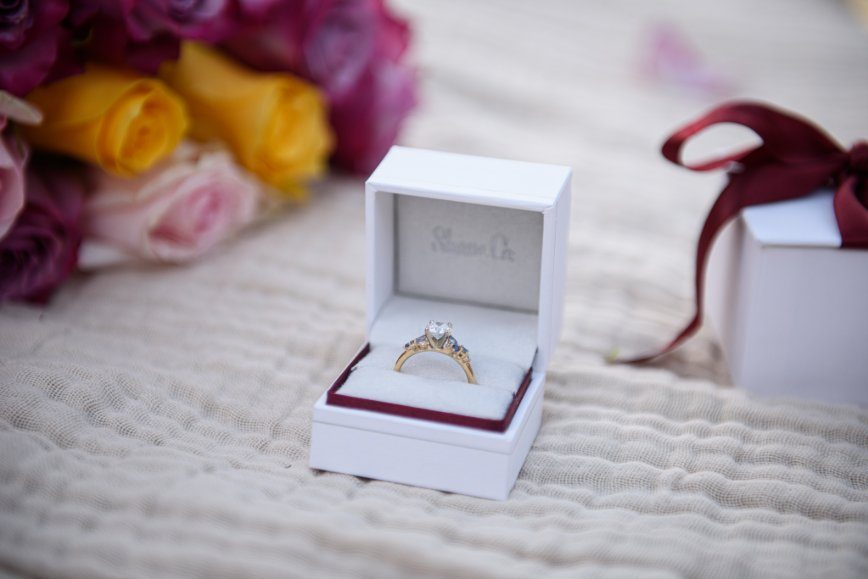
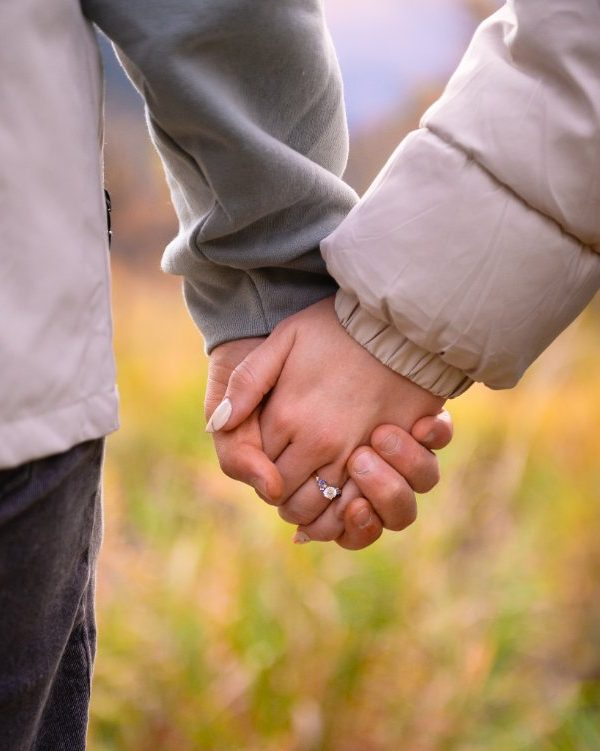
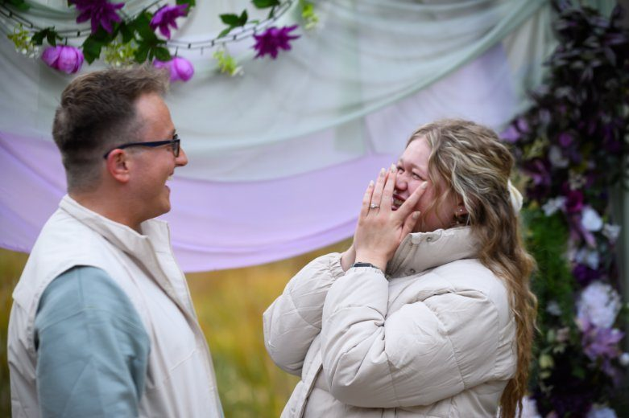
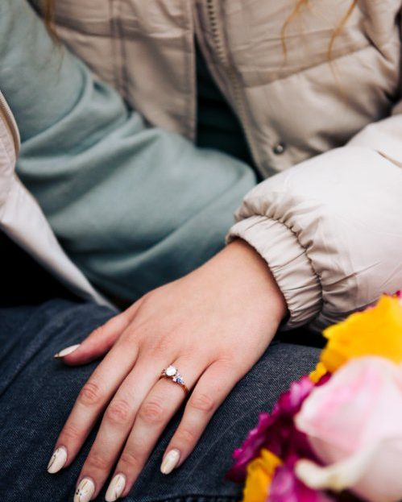

Provo & Utah proposal photography
Proposals & Engagements
The question, the answer, and the portraits after — planned carefully, photographed so the surprise stays a surprise.

The session look
Planned in secret, photographed in the open.
A proposal only happens once, so the planning does the heavy lifting: the location, the timing, the light, and the signals that say "now." On the day, the photographer is already in place and the moment itself stays natural — no staging, no retakes.
After the yes, we take relaxed engagement portraits while the news is still fresh.
What to expect
From first message to finished photos.
- Plan togetherWe choose a location and time, walk through the plan and signals, and cover backup options for weather or crowds.
- The moment itselfThe photographer is in place before you arrive. The proposal stays yours — photographed, not directed.
- Portraits & finished photosEngagement portraits right after, then your edited photos delivered as an online gallery. Delivery details are confirmed when you book.
Planning details
Good to know before you book.
- Locations: on location across Utah, based in Provo, with travel as far as Farmington for photo work.
- Timing: golden hour usually gives the softest light, but the right time depends on the location and plan.
- Keeping it secret: communication stays with you only, and the plan covers exactly how the photographer will blend in.
- After the proposal: many couples go on to book wedding coverage — see weddings.
Gallery
Proposals & engagements around Utah




Questions
Proposal FAQ
How do you keep a proposal a surprise?
We plan the location, timing, and signals together ahead of time, so the photographer is already in place and the moment itself stays natural.
Where in Utah do you photograph proposals?
Proposals and engagement sessions take place on location across Utah. Trevor Adair Photography is based in Provo and travels as far as Farmington for photo work.
What time of day works best for a proposal?
Golden hour — the hour before sunset — usually gives the softest light, but the right time also depends on the location and the plan. We choose it together.
How do I book a proposal or engagement session?
Send a message through the contact page with your target date, location ideas, and whether it is a surprise. Availability is confirmed from your inquiry.
How much does a proposal session cost?
Proposal and engagement sessions start at $280. Contact Trevor Adair Photography for availability and booking details.
The question
Let's plan your proposal.
Share your target date and location ideas — and whether it's a surprise — and we'll take it from there.